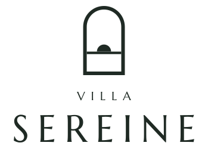
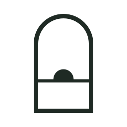

Villa Sereine · logo kit

An arched window with the sea and the sun on the horizon. The site opens through this window, and every room on the site is entered through the same arch.
Palette
Versions


In use

Rules